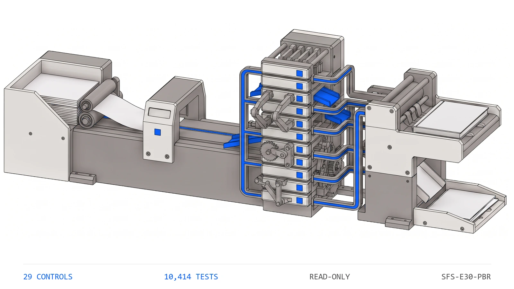

SFS-E30-PBR · PAYROLL CONTROLS · REV 2026-07-24 · PRODUCTION
PRODUCTION = runnable end-to-end, CI-backed, full test suite passing. All data fictional and seeded.
Payroll & Benefit Reconciliation
Did every benefit dollar the register withheld reach the provider, the ledger and cash intact?
An employer runs one payroll a period, and that single register fans out to several benefit providers, to the general ledger and to cash -- and every dollar it withheld has to arrive intact at each destination. This engine reads the eight artifacts one pay-period reconciliation carries -- the employee register, the plan catalog, the deduction register, the provider upload file, the remittance schedule, the entity summary, the journal entry and the reconciliation report -- and runs twenty-nine deterministic controls over them in registry order. Is the file complete and the review date readable; are the employee ids unique, the entities known and the DOB, HSA tier and eligible-comp fields legible; are the plan codes unique and each plan of a known type; does every deduction name a real employee and plan, sit one per pair, and reach each of its plan's providers per employee to the cent; does each plan's register total tie every provider upload, the ledger liability credit and the settling cash transfer; do the per-entity subtotals recompute from the register and sum to the consolidated total; does the employer match recompute from the plan formula capped at 401(a)(17); is every employee inside the 402(g), HSA-tier, FSA and 415(c) ceilings, and who is approaching one; does the per-period HSA withholding recompute from the remaining room over the remaining periods; did participant money reach the provider inside the DOL small-plan seven-business-day safe harbor on or after the pay date; does the journal entry balance and every benefit clearing account zero out; and does the report's stated tie determination and its statutory exception watchlist recompute from the evidence beneath them. It compares every tie-out with exact ==, treats the safe-harbor boundary as inclusive so a deposit on the seventh business day is still timely, and never writes to a source artifact.
Payroll benefit money looks like the most mechanical number in the close: a deduction withheld, uploaded to a provider, accrued in the ledger and settled in cash, the same figure four times over. That is exactly why it drifts. None of the ways it goes wrong look wrong in a stack of provider upload files. A per-employee deduction reaches the recordkeeper but not the custodian, or a plan total ties to one provider and misses the other; the upload file still foots and the participant is short at one destination. The employer match is booked on compensation above the 401(a)(17) cap, or an employee crosses the 402(g), HSA-tier, FSA or 415(c) ceiling by a cent while every subtotal beneath it still foots. Participant money is deposited a day past the DOL safe harbor, a lapse visible only against the pay date and a business-day count. And the reconciliation report calls a plan tied on a determination nobody rebuilt from the register, the uploads, the ledger and the cash underneath it. The engine recomputes every hand-off, every match, every limit and every tie flag from the base facts through the same kernel that produced them and compares with exact ==, checks the safe-harbor boundary as genuinely inclusive, ships a planted-defect file for every registered control, and states its benchmark as a command rather than a claim. A deferral a cent over the limit, a match on uncapped pay, or a deposit a day late is invisible until someone recomputes the money the payroll already moved.
Twelve control families run in registry order over each reconciliation file. The first proves the others had something to read and that the review date is legible, because a control that passes on absent evidence reports assurance it never performed.
a tie-out a cent off the recomputation is a break, not a rounding band
What it does for you
plain terms
An employer runs one payroll a period, and that single register fans out to several benefit providers, to the general ledger and to cash. A 401(k) deferral withheld on the register has to reach both the recordkeeper and the custodian; an HSA deduction has to reach the HSA administrator; an FSA election has to reach the FSA administrator; the employer match has to recompute from the plan formula; and every dollar has to land in the ledger as a balanced entry whose benefit payable clears to zero once the money is remitted. Four failures hide inside that, and none of them look wrong in a stack of provider upload files. The hand-off drifts: a per-employee deduction is not the amount that reached the provider, or a plan ties to the recordkeeper but not the custodian, or the cash transfer is a dollar off the liability it settles. The employer match is wrong: the booked figure does not recompute from the formula on eligible compensation, or it was computed on compensation above the 401(a)(17) cap. A statutory limit is breached: an employee is over the 402(g) deferral limit, the HSA tier limit, an FSA cap or the 415(c) additions ceiling, and the per-period withholding no longer recomputes from the room that remains. The deposit is late: participant money reached the provider outside the DOL small-plan seven-business-day safe harbor, or the rollup calls a plan tied on a determination nobody recomputed from the evidence underneath it. None of these are judgment calls. They are equalities and comparisons -- a register total against a provider upload with exact ==, a deferral against a limit with >, a deposit against a pay date and a business-day count -- which a deterministic control settles better than a spreadsheet inherited by whoever reconciles benefits this period.
The seeded demo runs every control over every reconciliation file7. The CLI generates thirty-one fictional reconciliation files -- one clean baseline and one carrying each of the thirty planted defects -- then runs all twenty-nine controls over each. The clean file returns PASS with no flags; every defect file returns REVIEW or FAIL and names the control it tripped along with the reason that control exists.
The limit breach and the watch flag fire at different boundaries8. The 402(g) ceiling and the review watch band are seeded independently. One defect file lifts an employee's prior year-to-date deferral over the 402(g) limit and trips lim_402g_deferral as a FAIL, checked with exact >; another lifts it into the file's own watch band, still under the limit, and trips lim_deferral_watch as a REVIEW-only FLAG -- proving the ceiling is tested at its boundary and the review signal is independent of the breach.
The tie determination is recomputed, not read back9. A defect file flips the reconciliation report's stated tie flag for one plan to the opposite of the truth while leaving every leg intact. rpt_tie_status_recomputes rebuilds the determination from the register, every provider upload, the ledger liability credit and the cash transfer and fails on the contradiction, proving the tie flag is recomputed from the evidence beneath it rather than trusted as stated.
Functional block diagram
engineering · each block links to its source
Plain terms
Seeded Reconciliation Files. fictional pay-period reconciliation files enter the control registry
Structural Precondition. is the reconciliation file complete and the review date legible
Employee Register. is the employee register sound and every employee attributable
Plan Catalog. are the plan codes unique and each plan of a known type
Deduction Register & Provider Hand-off. does every deduction reference a real row and reach each provider
Plan-Level Tie-Out. does the register total tie every provider, the ledger and cash
Multi-Entity Rollup. do the entity subtotals recompute and sum to the consolidated total
Employer Match. does the booked match recompute and stay under the comp cap
Statutory Limits. is every employee inside the 402(g), HSA, FSA and 415(c) ceilings
Per-Period Withholding. does the per-period HSA withholding recompute from the remaining room
Deposit Safe Harbor. did participant money remit inside the safe harbor, on or after pay
Journal Entry. does the journal entry balance and every clearing account zero out
Rollup Recompute. does the report's tie flag and watchlist recompute from the evidence
Registers, Catalog & Ledger. the artifacts every rule resolves against
Verdict and Findings. every finding, with the reason it exists, ends at a person
Engineering
Seeded Reconciliation Files. generate_corpus writes one clean baseline plus one planted-defect file for every registered control and one malformed-amount file, thirty-one files in total. Only the employees, the plan catalog, the register deductions and the pay/remit dates are stated; the employer match and the per-period HSA withholding are computed through the same reconcile kernel the engine recomputes with, and every rollup the engine later checks -- the provider uploads, the entity subtotals, the cash transfers, the journal entry, and the report's tie flags and exception watchlist -- is rebuilt from those base facts through the same helpers the controls use, so the relationships the engine tests are the relationships that produced the data.
Structural Precondition. One control. FAILs a file missing any of the eight artifact types or carrying a duplicate, or an unreadable review date, so no downstream rule holds vacuously on absent evidence.
Employee Register. Three controls: unique employee ids, every employee typed to a known employing entity, and a parseable DOB, known HSA tier and integer eligible comp on each row.
Plan Catalog. Two controls: unique plan codes, and every plan carrying one of the known plan types that select which control and which statutory limit apply to it.
Deduction Register & Provider Hand-off. Three controls: every deduction names a known employee and plan, no employee/plan pair carries two rows, and each employee's deduction reaches every one of its plan's providers to the cent.
Plan-Level Tie-Out. Three controls: each plan's register total ties every provider upload total, the journal-entry liability credit and the settling cash transfer, each compared with exact ==.
Multi-Entity Rollup. Two controls: each per-entity subtotal recomputes from that entity's own register deductions, and each plan's subtotals sum to the consolidated total and tie the register.
Employer Match. Two controls: the booked employer match recomputes from the rate on eligible compensation, and an above-cap match is limited to the rate applied to the 401(a)(17) cap.
Statutory Limits. Five controls: year-to-date deferral within 402(g), HSA within the tier limit, FSA within the cap, annual additions within 415(c), and a deferral inside the watch band flagged before it breaches.
Per-Period Withholding. Two controls: the per-period HSA deduction recomputes as the remaining room over the periods remaining, and no period withholds more than the largest pro-rated piece.
Deposit Safe Harbor. Two controls: participant money reached the provider within the seven-business-day safe harbor, boundary inclusive, and no remit date precedes the pay date it settles.
Journal Entry. Two controls: the pay-period journal entry balances, and every benefit clearing account nets to zero after remittance.
Rollup Recompute. Two controls: each plan's stated tie determination recomputes from its register, provider, ledger and cash legs, and the statutory exception watchlist ties the re-derived exceptions.
Registers, Catalog & Ledger. The employee register carries each employee's id, entity, DOB, HSA tier, eligible comp and prior year-to-date room; the plan catalog carries each plan's type, providers, statutory limits and match formula; the deduction register carries one row per employee/plan withholding; and the provider file, remittance schedule, entity summary, journal entry and reconciliation report carry the uploads, cash transfers, subtotals, ledger lines and tie flags every tie-out, limit, match and reconciliation control resolves against through the shared reconcile kernel.
Verdict and Findings. Findings roll up per reconciliation file: any FAIL is FAIL, FLAGs without FAILs are REVIEW, clean is PASS. The CLI exit code is the verdict, so a pipeline can gate on it. Reports carry no timestamps or absolute paths, which is what makes the committed report diffable.
Instruction set
every public command
Command
Operation
Output
Exit
Artifacts
python run.py
regenerate the seeded fictional corpus, run all twenty-nine controls, write both reports
per-file verdicts and every actionable finding, then the overall verdict
2 for the bundled corpus, which carries a planted defect for every control by design
benefit_report.json, benefit_report.md, samples/
python -m benefit_engine samples
analyze an existing folder of reconciliation files without regenerating it
100 percent of controls with a planted defect no control ships without a file demonstrating it firing
Control characteristics
engineering
Plain terms
The engine has no write path and therefore no autonomy to gate. It produces findings; a person decides whether a plan is signed off and whether a late deposit or a broken hand-off is chased.
Demo gate. FAIL on the bundled corpus, by design -- it carries a planted defect for every registered control
Severity
Verdict
Action
No findings above PASS
PASS
carry the mechanically clean reconciliation into the documented benefits sign-off
One or more FLAG, no FAIL
REVIEW
a human resolves each flag; a deferral inside the 402(g) watch band and an exception watchlist that does not tie the evidence both land here
One or more FAIL
FAIL
the plan or figure is not signed off until the failing control is cleared -- a hand-off that does not tie, a match that does not recompute, a limit breach, a late deposit, an unbalanced or unclearing entry, or a tie flag that does not recompute
Read-only: reconciliation files are parsed and never written back, so the engine cannot introduce the break it reports.
Integer cents throughout, compared with exact ==; there is no tolerance band on a tie-out, and a cent off the recomputation is reported as a break.
A figure that should be integer cents but is not produces an AMOUNT_INVALID finding contained to the one row it was read on, rather than being coerced into the number the engine is meant to audit.
One reconcile kernel: the controls and the generator share the predicates in benefit_engine.reconcile, so a determination cannot disagree with the data that produced it.
The 401(k) ties to two destinations: the register must reach both the recordkeeper and the custodian, so a plan that reaches one and misses the other is not reconciled.
The deposit safe harbor is inclusive: a deposit on the seventh business day is timely and the eighth is late, measured against the file's own pay date, never the system clock.
Deterministic and byte-stable: same inputs produce the same findings in the same order, with no timestamps or absolute paths in any output.
Absent evidence is never a passing control; a missing artifact fails completeness rather than letting the controls that read it pass unread.
Operating limits
what it refuses to do
The engine never runs payroll, moves money, funds a provider, files a return or writes to a source artifact. It reads the reconciliation file and stops.14
It reads the eight artifacts one pay-period reconciliation emits. It does not connect to a payroll system, a recordkeeper, a custodian, an HSA or FSA administrator, a bank or the general ledger.15
It proves the mechanical relationships hold -- the hand-offs tie, the match recomputes, the limits are met, the deposits are timely -- not that a provider actually received the money or that the underlying payroll was run correctly.16
It re-derives the match, the limits and the deposit timing from the rate, ceilings and safe-harbor window the file carries; it does not decide whether those parameters are the correct ones for the plan year and taxpayer.17
It takes the register, provider and ledger records at face value: it confirms they foot and reconcile, not that a deduction was authorized. All shipped data is fictional and the pay period is set in a fictional future.18
See it run
brand animation

The Payroll & Benefit Reconciliation engine tile states the question that has to hold plan by plan: every benefit dollar the register withheld reached each provider, the ledger and cash in the same amount, the employer match recomputed from its formula, every statutory limit held, every participant deposit landed inside the DOL safe harbor, and the report's tie flags recompute from the evidence beneath them.
One conversation: you describe the work that consumes your team's month; we tell you plainly what this engine can take over, what it can't, and what a scoped first phase would cost. Your people keep approval authority.